遊覽完順天東川, 拾回當年曾經在這裡留下的一些足跡, 心情十分暢快, 順天東川的風景真是很美, 雖然已經來過很多次, 每次總有新發現, 新的觸感, 還想繼續再來。接著是找地方吃晚餐, 也是最煩惱的時間。她突然很開心的對我說: 今早步行往火車站的時候, 她發現我們下榻的賓館附近有一間餐廳, 其中一個定食的食物十分豐富, 非常吸引, 只是價錢貴了一些, 但不記得價錢是多少! 想起今天的所謂午餐只吃了一小碗麵, 就將午餐的配額留給晚餐吧! 便馬上贊成她的意見。
我們下榻的賓館附近的餐廳? 為什麼我完全沒有留意? 也倒是, 她對商場及餐廳特別有興趣!
接著穿過豐得橋, 沿馬路朝 Guesthouse Happy Tour 賓館的方向走。哈哈, 馬路對面店舖的馬騮仔招牌很得意。
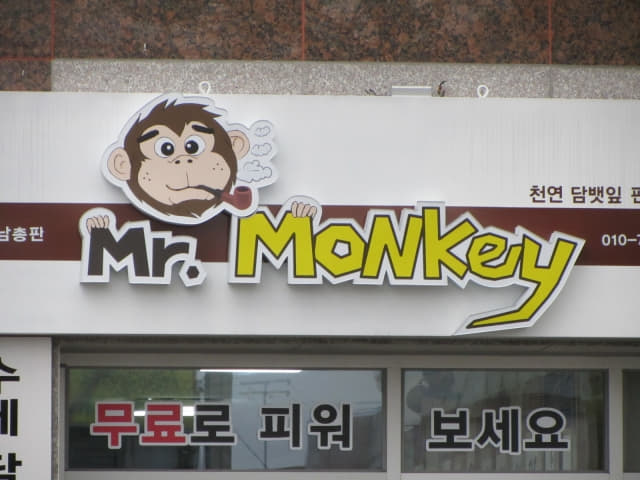
「건양식당」餐館 超豐富海鮮晚餐
很快便來到順天火車站對面, 在 NH Bank 轉右沿小路走十多步, 便來到她所說的餐廳, 名稱是「건양식당」, 果然就在 Guesthouse Happy Tour 賓館附近。
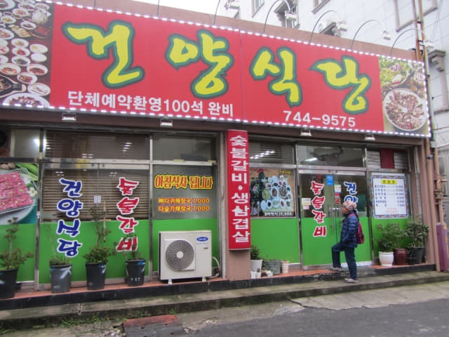
原來就是這定食 —「꼬막정식」! 看清楚, 果然十分豐富, 每位是 15,000 韓元, 雖然有點貴, 但仍然可以接受, 看見她那麼雀躍, 便立即決定在這裡吃晚餐。
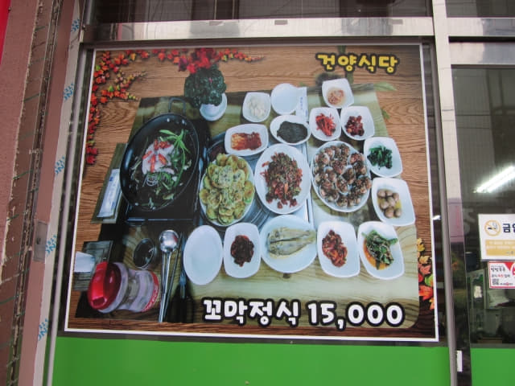
典型的韓國餐廳擺設, 沒有豪華裝修, 但十分隨便, 十分舒適。
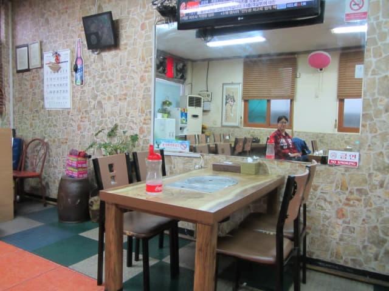
等了一會, 食物陸續送上。第一個驚喜, 有我們喜愛的煎黃花魚。
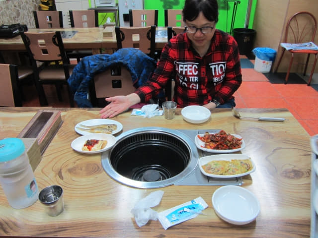
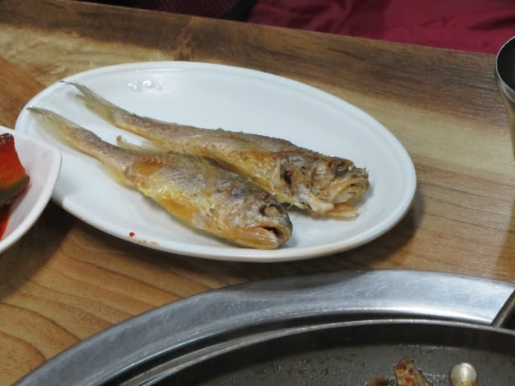
不一會, 食物已經將整個桌子放得滿滿的。食物都是以海鮮為主, 就稱為豐富海鮮大餐吧! 嘩! 太豐富了, 試問我們兩個人如何吃清所有食物?
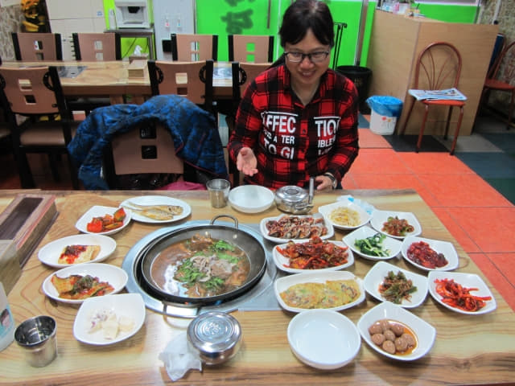
牛展海鮮湯鍋。
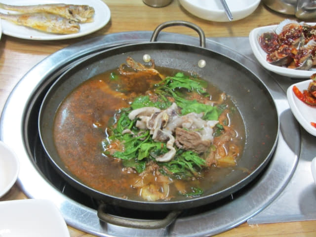
原來有她至愛的螄蚶, 大大隻的螄蚶, 比我平常在街市看到的大很多! 哈哈~~ 難怪她看中這晚餐, 對我來說真是不敢恭維, 由她獨享吧!
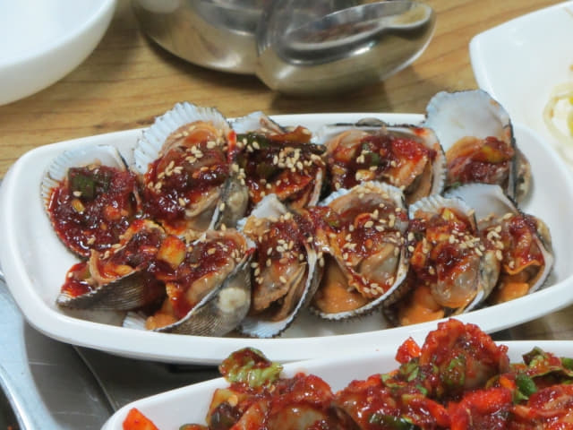
辣醬生腌蚌肉。大大粒的蚌肉, 食落有點似生蠔, 這個很好味!
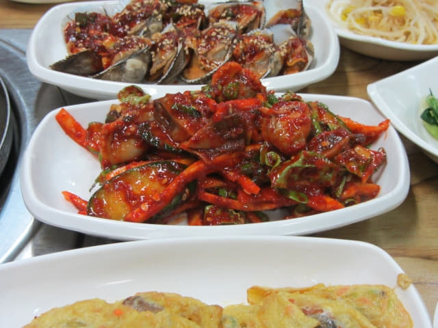
蚌肉海鮮煎蛋。
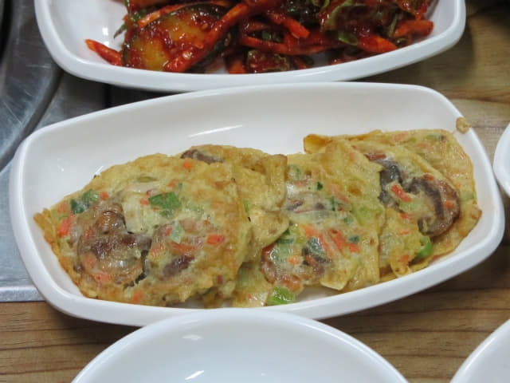
鵪鶉蛋。很久沒有吃鵪鶉蛋了, 分外回味。
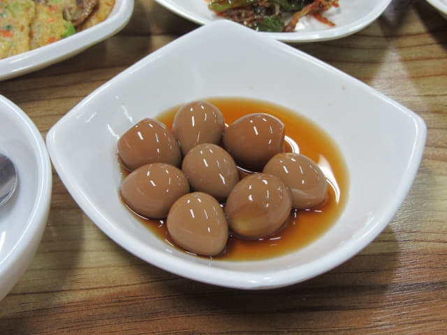
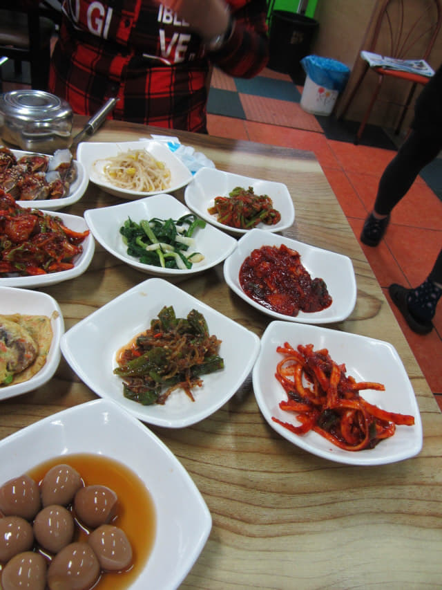
還有一些配菜, 太多了, 沒有拍照。
雖然下午只吃了一小碗麵, 又走了整天路, 肚子非常的餓, 但最終也沒法吃清桌上所有食物, 只有盡力而已。
結帳是30,000韓元, 以這樣的價錢, 不算貴了。

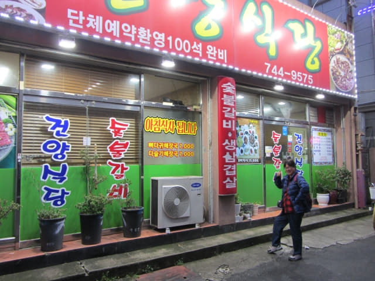
全羅南道．順天市 Guesthouse Happy Tour 賓館
離開餐館, 繼續沿道路走幾十步便返回我們下榻的 Guesthouse Happy Tour 賓館。昨天來到賓館的時候正下著傾盆大雨, 沒有和賓館拍照, 今天可以補拍了!
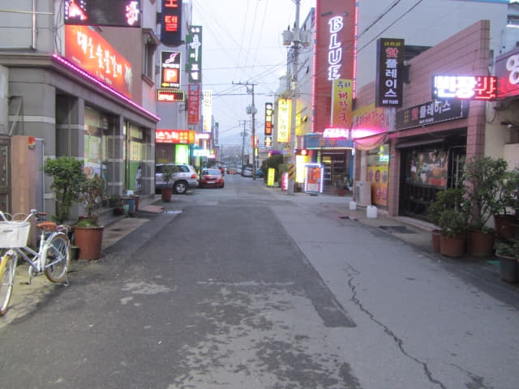
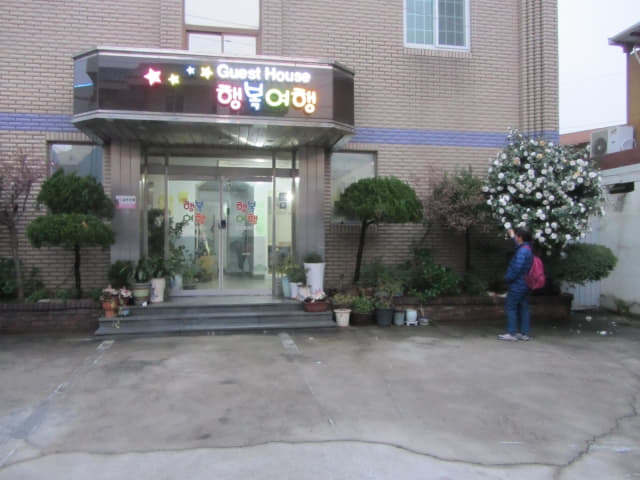
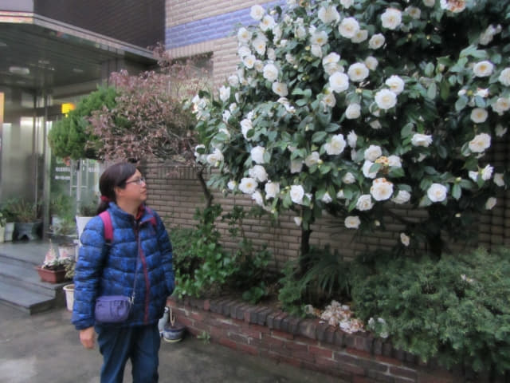
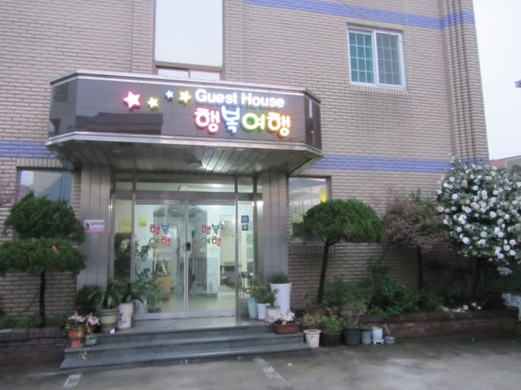
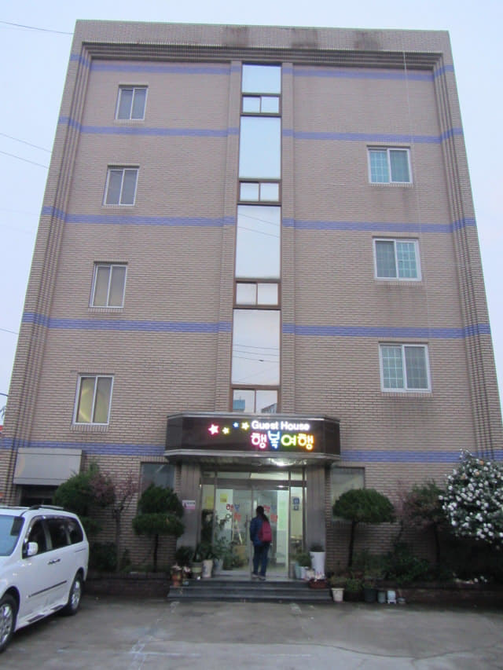
進入賓館一樓接待處, 差不多晚上七時。
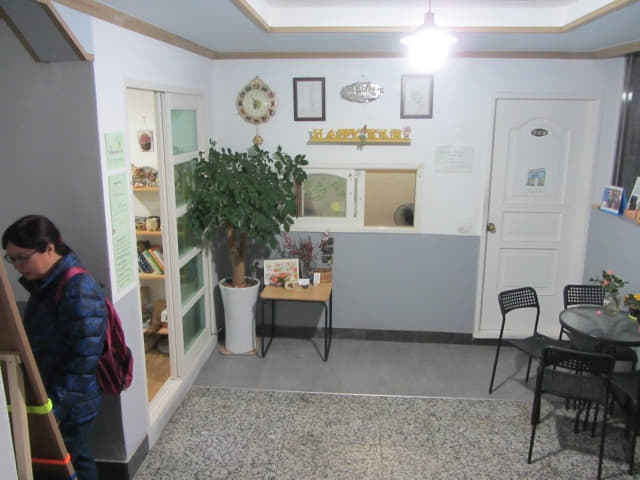
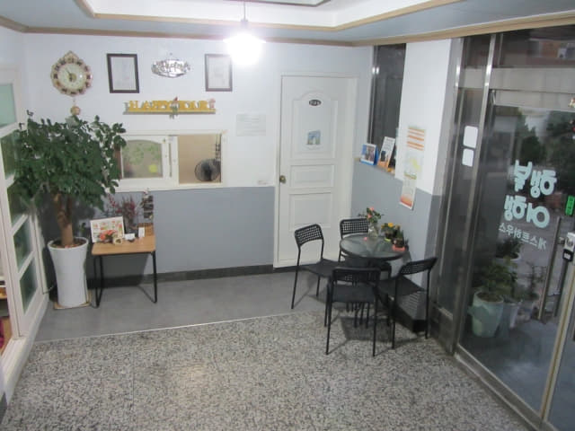
沿樓梯往一樓房間, 又經過那留言版。哈哈~~~ 看見我們的留言嗎?
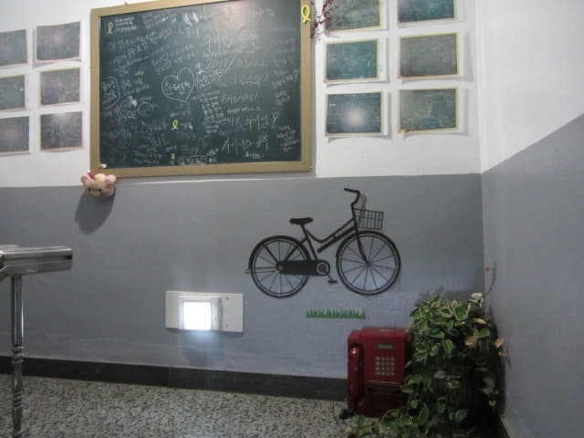
返回一樓房間。太飽了, 沒有吃昨晚買的草莓。休息了一會, 趁記憶猶新, 寫了今天的精彩行程日記。洗澡。準備睡覺。
韓國氣象廳天氣預測 傳來好消息
雖然估計明天也會下雨, 但睡前也往韓國氣象廳看看明天的天氣預測, 起碼心中有個預算。首先看看寶城的天氣預測: 上午下雨, 下午天陰, 有少量雨, 看來天氣漸漸好轉了。 接著匆匆看看麗水的天氣預測, 精神立即為之一振: 上午天陰, 下午轉晴! 哈哈~~ 天助我耶!
不可以再等了, 不知後天的天氣會否又轉壞, 明天是一個絕好的機會, 便馬上決定明天往麗水靈鷲山, 接著立即收拾靈鷲山的行程資料, 粗略安排了行程。總算可以安排往這旅程重點之一的麗水靈鷲山, 今晚可以大睡了!